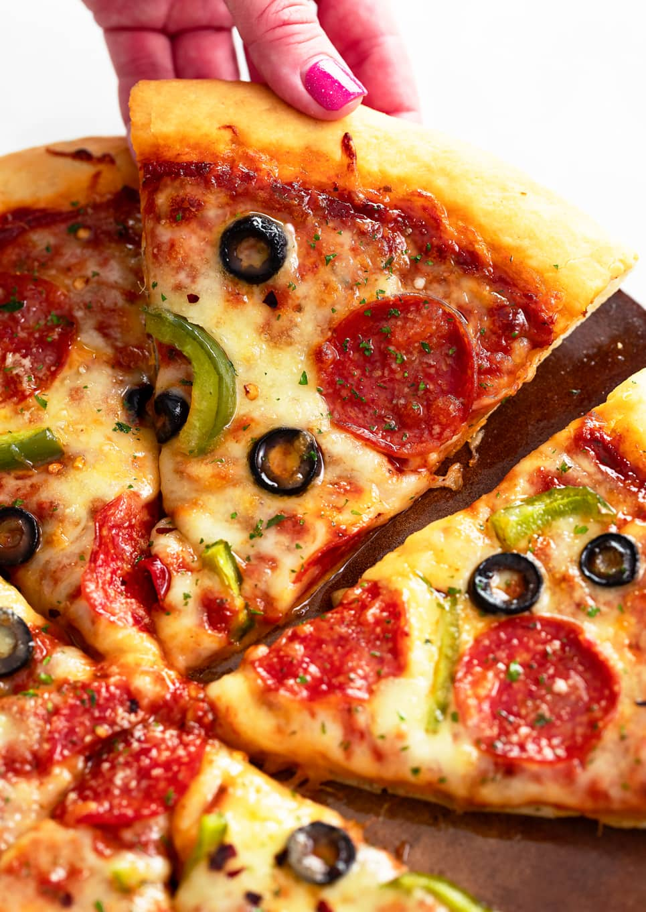

Homemade Pizza

Description
This classic pizza is a staple for any pizza lover, and with just a few ingredients, you can make it at home. Our recipe features a pre-made pizza crust, pizza sauce, mozzarella cheese, and of course, pepperoni. You can also add some diced bell peppers and sliced onions for extra flavor. In just 12-15 minutes, you'll have a hot and tasty homemade pizza that's perfect for a quick dinner or a fun family meal. So go ahead, give it a try, and enjoy the magic of homemade pizza!
Ingredients
- 1 pre-made pizza crust
- 1 cup pizza sauce
- 2 cups shredded mozzarella cheese
- 2.5 ounces sliced pepperoni
- Optional: 1 diced bell pepper, 1 sliced onion, 1 teaspoon dried oregano
Steps
- Preheat the oven to 425°F (220°C).
- Spread the pizza sauce evenly over the crust.
- Sprinkle the mozzarella cheese on top.
- Add the pepperoni and any optional toppings.
- Bake for 12-15 minutes, or until the crust is golden brown and the cheese is bubbly.
- Let it cool for a few minutes before slicing and serving. Enjoy!